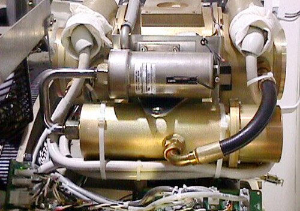

Operating Documentation
Direction 5114045-800, Rev# 10
LightSpeed 4.X Service Information (Advanced)
Operating Documentation |
| Required Persons | Preliminary Reqs | Procedure | Finalization |
|---|---|---|---|
| 1 |
| Last Revised: | August 7, 2003 |
| Item | Qty | Effectivity | Part# | Manufacturer | |
|---|---|---|---|---|---|
| Spanner wrench | 1 | - | - | - | |
| 3 mm Hex key | 1 | - | - | - | |
| Item | Qty | Effectivity | Part# | Manufacturer |
|---|---|---|---|---|
| Large ty-raps | - | 46-208758P5 | - | |
| Transformer oil | - | - | - | |
| Paper towels | - | - | - |
| Item | Qty | Effectivity | Part# | Manufacturer | |
|---|---|---|---|---|---|
| HV Cables | - | - | - | ||
| NOTE: | Before beginning this procedure, please read the safety information in Equipment Service - Gantry. |
Move table to its lowest elevation.
Remove side gantry covers and rear base covers.
Turn OFF all 3 switches (Axial Drive, HVDC, 120 VAC) on the STC backplane.
Remove top gantry covers.
Position tube at 3 o’clock position
| ELECTROCUTION HAZARD | |
| HIGH VOLTAGE PRESENT. | |
| Use proper lockout/tagout procedures before replacing components. |
Remove power at main disconnect (A1) panel. Use proper Lockout/Tagout procedures.
Remove ty-raps securing the HV cables.
Using spanner wrench remove HV candlestick from tube well.
Ground the end of the cable to the Gantry Frame to verify no voltage.
Wipe excess oil with paper towels.
Cover tube well.
Rotate Gantry until the tube reaches the 12 o’clock position.
Position HV cable toward front of gantry.
Use the spanner wrench to remove the candlestick at the HV tank.
Wipe excess oil with paper towels.
Cover the HV tank well.
Place the Tilt Relay Board in the manual mode.
Restore power at main disconnect (A1) panel. Use proper Lockout/Tagout procedures.
Manually tilt gantry backward to 30 degrees.
| NOTE: | Tilting the gantry is optional. This provides for easier access to the cable clamps while standing at the rear of the gantry. |
Remove power at main disconnect (A1) panel. Use proper Lockout/Tagout procedures.
For the Cathode cable:
Cut ty-raps at rear of HEMRC assembly.
Remove 2 cable clamps behind tube attached to the rotating base casting.
For the Anode cable:
Carefully cut ty-raps securing the rotating harness to the HV cable.
Remove the 2 cable clamps on both sides of the OBC assembly attached to the rotating base casting.
Carefully remove the cable from the Gantry.
| Always start at the HV tank. Excess slack in the HV cables can result in system damage. Ensure cables are properly secured. It is critical to prevent damage to the system during normal gantry rotation. 14 G’s of force are felt at 0.5 second rotational speed. | |
Insert the HV Cable candlestick into the HV tank well. No oil yet.
Loosely tighten the cable in the well.
For the Cathode cable:
Route the cable behind the HEMRC assembly.
Loosely ty-rap cable to the HEMRC frame at 2 points.
Verify the HV cable can be removed from the HV tank. USE THE ABSOLUTE MINIMUM AMOUNT OF CABLE SLACK.
Secure the ty-raps.
Install the cable clamps as originally oriented behind the tube.
For the Anode cable:
Route the cable behind the OBC assembly.
Install the cable clamp near the stamped “-” on the rotating base casting.
Verify the HV cable can be removed from the HV tank. USE THE ABSOLUTE MINIMUM AMOUNT OF CABLE SLACK.
Install the second cable clamp between the tube and the OBC assembly on the rotating base casting.
Remove the candlestick from the HV tank well.
Restore power to the main (A1) panel. Do not turn on the STC backplane switches.
Manually tilt the gantry to zero degrees.
Remove power at main disconnect (A1) panel. Use proper Lockout/Tagout procedures.
Add 20 ml (0.7 oz) of dielectric oil to the well of the HV transformer tank.
Align the cable terminal orienting key with the notch in the receptacle.
| Do not over tighten the locking ring. Over tightening can deform the cable plug sealing surfaces, break the oil seal between receptacle and housing, twist the receptacle, and disrupt internal wiring. | |
Slowly insert the cable, to engage the connector pins, and seat the cable in the well.
Tighten the cable locking ring.
Rotate the cable strain relief for a clean cable dress.
Use the spanner wrench to tighten the locking ring.
Use a torque wrench to tighten the locking ring to 11.1 ft-lbs (153 kg-cm).
Back off on the cable locking ring without disturbing the cable plug.
Re-tighten the locking ring, and torque to 7.1 ft-lbs (98 kg-cm).
| NOTE: | Use the spanner wrench with a torque wrench when you tighten the
high-voltage cables on the tube unit. IF YOU GET OIL ON YOUR HANDS, WASH THEM NOW. |
Carefully wipe up all excess oil.
Rotate tube to the 3 o’clock position.
Secure HV Cables using large Ty-Raps as shown in Illustration 1.
Illustration 1: HV Cable Routing

Add 20 ml (0.7 oz.) of dielectric oil to the HV connector well of the x-ray tube.
Align the cable terminal orienting key with the notch in the receptacle.
| Do not over tighten the locking ring. Over tightening can deform the cable plug sealing surfaces, break the oil seal between receptacle and housing, twist the receptacle, and disrupt internal wiring. | |
Slowly insert the cable, to engage the connector pins, and seat the cable in the well.
Tighten the cable locking ring.
Rotate the cable strain relief for a clean cable dress.
Use the spanner wrench to tighten the locking ring.
Use a torque wrench to tighten the locking ring to 11.1 ft.-lbs (153 kg-cm).
Back off on the cable locking ring without disturbing the cable plug.
Re-tighten the locking ring, and torque to 7.1 ft-lbs (98 kg-cm).
| NOTE: | Use the spanner wrench with a torque wrench when you tighten the
high-voltage cables on the tube unit. IF YOU GET OIL ON YOUR HANDS, WASH THEM NOW. |
Carefully wipe up all excess oil.
Place Tilt Relay Board back to normal mode.
Restore power at main disconnect (A1) panel.
Turn ON the 120 VAC at the STC backplane.
Manually rotate the gantry and verify there are no obstructions.
Turn ON the Axial Enable and HVDC on the STC backplane.
Rotate the Gantry at a speed of 1 revolution per second, for several revolutions.
Rotate the Gantry at a speed of 0.5 revolution per second, for several revolutions.
Check the tube and transformer tank wells for oil leaks.
Reassemble Gantry.
Perform Auto mA Calibration located in KV Gain Pots Adjustment procedure.